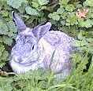
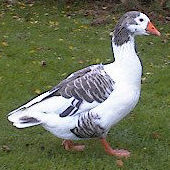

La jouôte
Fort Lauderdale, Florida,
U.S.A.
Lé 27 d'avri, 1974.
Moussieu l'Rédacteu,
L'Vendrédi Saint, tchi veint dé s'pâsser, m'fait penser à ma jannèche siez Papa à la forge ès Landes, à St. Ouën. Papa freunmait tréjous la forge chu jour-là - jour acouo pus sanctifié qué l'jour du Dînmanche. Dans la Litourgie, à la page tchi nouos donne "La Table des Vigiles, Jeûnes et Jours d'Abstinence", i nouos est dit qué touos les vendrédis d'l'année excepté l'Jour dé Noué sont jours dé jeun. Malheutheusement, un tas d'Anglyicans n'ont pon obsèrvé l'ordonnance dé la Litourgie strictément, mais j'n'éthions janmais pensé d'mangi d'viande siez Papa l'Vendrédi Saint. Nou pouvait mangi des baînis et d'la mouothue ou au't paîsson, et nou-s-avait des fliottes. La viande, ayant du sang, 'tait întèrdite. En ville, où'est tchi'i' y'avait un boulandgi à toutes les carres dé rue, il' avaient des p'tits pains appelés "Hot Cross Buns" en angliais pour l'occâsion. Ch'tait des ban'ses tch'avaient eune crouaix mèrtchie sus l'haut, et il' 'taient vendues caudes en sortant du fou.
L'arlévée du Vendrédi Saint j'allions tréjous jusqu'à La Grève dé Lé, Papa et mé, à pid, sans doute. I' m'ttait ses habits du Dînmanche par respé pour lé jour solonnel. Arrivés là, nou marchait l'long du pliein dans la grève, et pis Papa s'assiévait sus un rotchi et j'halais mes cauches et mes souliers pour mett' mes pids à l'ieau. Beintôt nou s'en r'allait trantchil'yement à pid à la maîson. La Marche n'nouos faîsait pon d'peux dans chu temps-là.

La dreine fais qué j'y'allinmes ensembl'ye 'tait en l'année 1900. En c'mîn, Papa m'racontit comment tch'i' y'avait eune cruelle couôteunme des touos vièrs temps tch'avait lieu à La Grève lé Mardi Gras, lé Lundi d'Pâques et aut' jours dé fête. Heutheusement oulle avait cêssi tchiques années d'vant. La fête 'tait appelée "La Jouôte". Les gens am'naient des cos, des poules, des canards et des lapîns. Y'en avait mème tchi gardaient des poules pour l'occâsion. Eh bein, eune fais volaille et lapîns en pliaiche, probabliément à banon dans l'enclios arrangi pour la jouôte, l'publyi 'tait libre dé l's abattre atout des pièrres, l's assonmer atout des bâtons, ou mème tither d'ssus en payant tant par coup. Lé chein tchi tuait volaille ou lapîn 'tait autorisé d'prendre possession d'la carcasse. V'la tchi faîsait un r'pas à bouan marchi.

Dans des temps la jouôte avait lieu tout près d's églyises parouaîssiales, car où'est tch'i' y'avait eune églyise y'avait eune aubèrge étout, mais y'a eune chînquantaine d'années, Papa m'dit, l's autorités lus en d'mentîdrent, probabliément à cause d'la piqu'thie d'pièrres et des coups d'arme, et v'la tchi fut arrêté. La jouôte continnuit d'pis chu temps-là, mais à la pliaiche dé pitchi des pièrres et tither sus volaille et lapîns, les gens tithaient sus des boutelles ou aut' objets fliottants, et l'prix pour les gangnants 'tait des pithots.
"I' n'y a pon d'jouôtes au jour d'aniet," m'dit Papa, "et j'crai qué ch'tait à La Grève dé Lé qu'la dreine eut lieu y'a deux ou trais ans. Tan P'pèe et tes oncl'yes n'ont janmais 'té ès jouôtes, car j'n'avons janmais approuvé d'cruauté ès annimaux dans nouot' fanmil'ye."
"Les Pièrres dé Lé ont-i' rein à faithe auve La Grève dé Lé?" j'li d'mandis.
"Eh bein," i' m'dit, "i' s'pouorrait bein tch'il' 'taient pus près d'la Grève dans les touos vièrs temps tchi n'sont à ch't heu, et tch'il 'taient considéthées partie du Fieu d'Lé. J'pâle du temps tch'i' n'y avait qu'un canné tchi s'pathait Jèrri d'la Nouormandie et qu'eune grande forêt couvrait toute l'êtendue du Mont St. Miché à la Baie d'St. Ouên. I' faut penser qu'Les Mîntchais, L's Êcréhous et Les Pièrres dé Lé n'étaient p't-êt' pon liain d'nous côtes de ch't' êpoque-là. Mais j'sis bein content dé t'ouï appeler Les Pièrres dé Lé par lus vraie nom, car un tas d'gens lus donnent lé mênom dé 'Pater Nosters'."
"Bon!" j'lis dis. "Comment tch'i' sont v'nus à êt' appelées d'même?"
"Eh bein," i' m'dit, "i' pathaît qu'un navithe fut naufragi et pèrdu corps et beins sus Les Pièrres y'a tchiques chents ans en allant d'Jèrri en Sèr. Les gens 'taient supèrstitieux dans ch temps-là, et quand les pêtcheurs pâssaient par là i' lus sembliait ouï les cris des naufragis et i' r'citaient l'Oraison Dominnicale pour lus soulagi l'esprit. Ch'tait en Latîn à l'êpoque, et ch'est d'mème qué l'affaithe quémenchit. Ch'est r'mèrquabl'ye qu'un tas d'Jèrriais n'savent pon l'histouaithe et tch'il' appellent Les Pièrres par lus mênom. Mais ch'n'est pon êtonnant: Y'en a mème tchi n'savent pon qu'l'Oraison Dominnicale est l' 'Notre Père'!"
"J'pense bein qu'ch'est viyant tch'i' n'ont pon 'té à l'Êcole du Dînmanche," j'lî dis, "car Moussieu Pépîn nouos explyitchit ch'là y'a longtemps à l'Églyise dé St. George."
George d'La Forge
Viyiz étout: